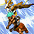

2005～ サマナー スキル一覧
※大きな改変が定期的に入っているため、2017年辺りと比較してしまうと大分古い情報の可能性があります。
2018/11/7 サマナースキル改変前のデータ。
改変後は、2018/11/7バランスパッチ反映版を参考にしてください。
 |
笛吹き | |||||||||||||
|---|---|---|---|---|---|---|---|---|---|---|---|---|---|---|
| スキル難易度 | 1 | |||||||||||||
| 必要スキル | なし |
|||||||||||||
| スキル説明 | 特殊な音色で敵に眠り、麻痺、混乱、チャーミング等の 状態異常を引き起こす攻撃を行う。 | |||||||||||||
| レベル | 1 | 2 | 3 | 4 | 5 | 6 | 7 | 8 | 9 | 10 | 20 | 30 | 40 | 50 |
| 消費CP | 0 | 0 | 0 | 0 | 0 | 0 | 0 | 0 | 0 | 0 | 0 | 0 | 0 | 0 |
| 獲得CP | 2.1 | 2.2 | 2.3 | 2.4 | 2.5 | 2.6 | 2.7 | 2.8 | 2.9 | 3 | 4 | 5 | 6 | 7 |
| 風属性攻撃力 | 3.3〜4.7 | 3.6〜6.4 | 3.9〜8.1 | 4.2〜9.8 | 4.5〜11.5 | 4.8〜13.2 | 5.1〜14.9 | 5.4〜16.6 | 5.7〜18.3 | 6〜20 | 9〜37 | 12〜54 | 15〜71 | 18〜88 |
| 状態異常 | 眠り・麻痺・混乱が各33％の確率で発動(1.5秒) | |||||||||||||
| 突撃命令 | ||||||||||||||
|---|---|---|---|---|---|---|---|---|---|---|---|---|---|---|
| スキル難易度 | 1 | |||||||||||||
| 必要スキル | 笛吹き [3] |
|||||||||||||
| スキル説明 | 現在のペットと召喚獣に敵に向かって突進する命令を下す。 召喚獣の攻撃力が上昇する。 | |||||||||||||
| レベル | 1 | 2 | 3 | 4 | 5 | 6 | 7 | 8 | 9 | 10 | 20 | 30 | 40 | 50 |
| 消費CP | 0 | 0 | 0 | 0 | 0 | 0 | 0 | 0 | 0 | 0 | 0 | 0 | 0 | 0 |
| 獲得CP | 1.2 | 1.4 | 1.6 | 1.8 | 2 | 2.2 | 2.4 | 2.6 | 2.8 | 3 | 5 | 7 | 9 | 11 |
| 召喚獣の攻撃力増加 | 2% | 4% | 6% | 8% | 10% | 12% | 14% | 16% | 18% | 20% | 40% | 60% | 80% | 100% |
 |
保護命令 | |||||||||||||
|---|---|---|---|---|---|---|---|---|---|---|---|---|---|---|
| スキル難易度 | 1 | |||||||||||||
| 必要スキル | 突撃命令 [3] |
|||||||||||||
| スキル説明 | ペットと召喚獣に身を保護しながら敵を攻撃する命令を下す。 召喚獣の防御力が上昇する。 | |||||||||||||
| レベル | 1 | 2 | 3 | 4 | 5 | 6 | 7 | 8 | 9 | 10 | 20 | 30 | 40 | 50 |
| 消費CP | 2 | 2 | 2 | 2 | 2 | 2 | 2 | 2 | 2 | 2 | 2 | 2 | 2 | 2 |
| 獲得CP | 2 | 2 | 2 | 2 | 2 | 2 | 2 | 2 | 2 | 2 | 2 | 2 | 2 | 2 |
| 召喚獣の防御力増加 | 2% | 4% | 6% | 8% | 10% | 12% | 14% | 16% | 18% | 20% | 40% | 60% | 80% | 100% |
| ライディングドック | ||||||||||||||
|---|---|---|---|---|---|---|---|---|---|---|---|---|---|---|
| スキル難易度 | 2 | |||||||||||||
| 必要スキル | ケルビー召喚 [6] 笛吹き [6] |
|||||||||||||
| スキル説明 | ケルビーがサマナーを乗せて素早い速度で移動する。 サマナーの集中力が向上する。 | |||||||||||||
| レベル | 1 | 2 | 3 | 4 | 5 | 6 | 7 | 8 | 9 | 10 | 20 | 30 | 40 | 50 |
| 消費CP | 10.3 | 10.6 | 10.9 | 11.2 | 11.5 | 11.8 | 12.1 | 12.4 | 12.7 | 13 | 16 | 19 | 22 | 25 |
| 獲得CP | 0.5 | 1 | 1.5 | 2 | 2.5 | 3 | 3.5 | 4 | 4.5 | 5 | 10 | 15 | 20 | 25 |
| 集中力 | 16.50% | 18% | 19.50% | 21% | 22.50% | 24% | 25.50% | 27% | 28.50% | 30% | 45% | 60% | 75% | 90% |
| プレイヤーの火抵抗増加量 | 11% | 12% | 13% | 14% | 15% | 16% | 17% | 18% | 19% | 20% | 30% | 40% | 50% | 60% |
| 移動速度 | 11% | 12% | 13% | 14% | 15% | 16% | 17% | 18% | 19% | 20% | 30% | 40% | 50% | 60% |
| 持続時間（秒） | 37 | 44 | 51 | 58 | 65 | 72 | 79 | 86 | 93 | 100 | 170 | 240 | 310 | 380 |
| テイルスピアー | ||||||||||||||
|---|---|---|---|---|---|---|---|---|---|---|---|---|---|---|
| スキル難易度 | 3 | |||||||||||||
| 必要スキル | ケルビー召喚 [12] 突撃命令 [12] |
|||||||||||||
| スキル説明 | ケルビーの尻尾についている火の槍で敵を攻撃する。 | |||||||||||||
| レベル | 1 | 2 | 3 | 4 | 5 | 6 | 7 | 8 | 9 | 10 | 20 | 30 | 40 | 50 |
| 消費CP | 16 | 17 | 18 | 19 | 20 | 21 | 22 | 23 | 24 | 25 | 35 | 45 | 55 | 65 |
| 獲得CP | 2 | 4 | 6 | 8 | 10 | 12 | 14 | 16 | 18 | 20 | 40 | 60 | 80 | 100 |
| 召喚獣の攻撃力増加 | 2% | 4% | 6% | 8% | 10% | 12% | 14% | 16% | 18% | 20% | 40% | 60% | 80% | 100% |
| 火属性攻撃力 | 13~ 33 |
16~ 36 |
19~ 39 |
22~ 42 |
25~ 45 |
28~ 48 |
31~ 51 |
34~ 54 |
37~ 57 |
40~ 60 |
70~ 90 |
100~ 120 |
130~ 150 |
160~ 180 |
| フレームリング | ||||||||||||||
|---|---|---|---|---|---|---|---|---|---|---|---|---|---|---|
| スキル難易度 | 4 | |||||||||||||
| 必要スキル | テイルスピアー [6] 保護命令 [18] |
|||||||||||||
| スキル説明 | 指定した目的地までケルビーを走らせた後、ケルビーの周囲に円形の火炎の壁を形成する。ケルビーが目的地で停止している間は、 周辺の敵に熱気でダメージを与える。 | |||||||||||||
| レベル | 1 | 2 | 3 | 4 | 5 | 6 | 7 | 8 | 9 | 10 | 20 | 30 | 40 | 50 |
| 消費CP | 42 | 44 | 46 | 48 | 50 | 52 | 54 | 56 | 58 | 60 | 80 | 100 | 120 | 140 |
| 獲得CP | 0 | 0 | 0 | 0 | 0 | 0 | 0 | 0 | 0 | 0 | 0 | 0 | 0 | 0 |
| 火属性攻撃力 | 12~ 52 |
14~ 54 |
16~ 56 |
18~ 58 |
20~ 60 |
22~ 62 |
24~ 64 |
26~ 66 |
28~ 68 |
30~ 70 |
50~ 90 |
70~ 110 |
90~ 130 |
110~ 150 |
| 持続時間（秒） | 3.1 | 3.2 | 3.3 | 3.4 | 3.5 | 3.6 | 3.7 | 3.8 | 3.9 | 4 | 5 | 6 | 7 | 8 |
| 攻撃間隔 | 1回あたり1秒 | |||||||||||||
| 爆発半径 | ケルビーと重ならない近接の敵 | |||||||||||||
| インシナレイト | ||||||||||||||
|---|---|---|---|---|---|---|---|---|---|---|---|---|---|---|
| スキル難易度 | 5 | |||||||||||||
| 必要スキル | フレームリング [6] 保護命令 [24] |
|||||||||||||
| スキル説明 | ケルビーが高熱の火炎で取り囲まれ、 周辺に接近するすべての敵にダメージを与える。 | |||||||||||||
| レベル | 1 | 2 | 3 | 4 | 5 | 6 | 7 | 8 | 9 | 10 | 20 | 30 | 40 | 50 |
| 消費CP | 121 | 122 | 123 | 124 | 125 | 126 | 127 | 128 | 129 | 130 | 140 | 150 | 160 | 170 |
| 獲得CP | 0 | 0 | 0 | 0 | 0 | 0 | 0 | 0 | 0 | 0 | 0 | 0 | 0 | 0 |
| 火属性攻撃力 | 39~ 89 |
43~ 93 |
47~ 97 |
51~ 101 |
55~ 105 |
59~ 109 |
63~ 113 |
67~ 117 |
71~ 121 |
75~ 125 |
115~ 165 |
155~ 205 |
195~ 245 |
235~ 285 |
| 爆発半径（m） | 1.01 | 1.02 | 1.03 | 1.04 | 1.05 | 1.06 | 1.07 | 1.08 | 1.09 | 1.1 | 1.2 | 1.3 | 1.4 | 1.5 |
| 備考 | 段階別ダメージ適用[60%～120%] (20%刻み) | |||||||||||||
| 備考 | アクティブ(ON/OFF)スキル | |||||||||||||
| スウェルフィッシュバブル | ||||||||||||||
|---|---|---|---|---|---|---|---|---|---|---|---|---|---|---|
| スキル難易度 | 1 | |||||||||||||
| 必要スキル | スウェルファー召喚 [3] |
|||||||||||||
| スキル説明 | スウェルファーが毒性の気泡を作って空中に浮かべる。 この泡に当たった敵は毒に侵されて若干のダメージと共にしばらく体が麻痺する。 | |||||||||||||
| レベル | 1 | 2 | 3 | 4 | 5 | 6 | 7 | 8 | 9 | 10 | 20 | 30 | 40 | 50 |
| 消費CP | 0.2 | 0.4 | 0.6 | 0.8 | 1 | 1.2 | 1.4 | 1.6 | 1.8 | 2 | 4 | 6 | 8 | 10 |
| 獲得CP | 0 | 0 | 0 | 0 | 0 | 0 | 0 | 0 | 0 | 0 | 0 | 0 | 0 | 0 |
| 水属性攻撃力 | 3.6~ 7.6 |
4.2~ 8.2 |
4.8~ 8.8 |
5.4~ 9.4 |
6~ 10 |
6.6~ 10.6 |
7.2~ 11.2 |
7.8~ 11.8 |
8.4~ 12.4 |
9~ 13 |
15~ 19 |
21~ 25 |
27~ 31 |
33~ 37 |
| 闇属性攻撃力 | 0.3~ 2.3 |
0.6~ 2.6 |
0.9~ 2.9 |
1.2~ 3.2 |
1.5~ 3.5 |
1.8~ 3.8 |
2.1~ 4.1 |
2.4~ 4.4 |
2.7~ 4.7 |
3~ 5 |
6~ 8 |
9~ 11 |
12~ 14 |
15~ 17 |
| 泡持続時間（秒） | 35 | 40 | 45 | 50 | 55 | 60 | 65 | 70 | 75 | 80 | 130 | 180 | 230 | 280 |
| 最大設置個数 | 2 | 2 | 2 | 2 | 3 | 3 | 3 | 3 | 3 | 3 | 4 | 5 | 6 | 7 |
| エクスパンション | ||||||||||||||
|---|---|---|---|---|---|---|---|---|---|---|---|---|---|---|
| スキル難易度 | 2 | |||||||||||||
| 必要スキル | スウェルフィッシュバブル [6] |
|||||||||||||
| スキル説明 | スウェルファーがトゲを立てて体を膨らませ、サマナーを防御する。 パーティーメンバーもトゲが立った状態になる。 | |||||||||||||
| レベル | 1 | 2 | 3 | 4 | 5 | 6 | 7 | 8 | 9 | 10 | 20 | 30 | 40 | 50 |
| 消費CP | 5.5 | 6 | 6.5 | 7 | 7.5 | 8 | 8.5 | 9 | 9.5 | 10 | 15 | 20 | 25 | 30 |
| 獲得CP | 0.2 | 0.4 | 0.6 | 0.8 | 1 | 1.2 | 1.4 | 1.6 | 1.8 | 2 | 4 | 6 | 8 | 10 |
| 召喚獣防御力増加(+) | 3 | 3 | 3 | 3 | 3 | 3 | 3 | 3 | 3 | 3 | 3 | 3 | 3 | 3 |
| 召喚獣防御力増加(％） | 1% | 2% | 3% | 4% | 5% | 6% | 7% | 8% | 9% | 10% | 20% | 30% | 40% | 50% |
| ダメージ反射量 | 7% | 9% | 11% | 13% | 15% | 17% | 19% | 21% | 23% | 25% | 45% | 65% | 85% | 105% |
| 備考 | 敵の防御力によっては低ダメージが出ることもあります。 | |||||||||||||
| 備考 | アクティブ(ON/OFF)スキル | |||||||||||||
| バブルガムエクスプロージョン | ||||||||||||||
|---|---|---|---|---|---|---|---|---|---|---|---|---|---|---|
| スキル難易度 | 4 | |||||||||||||
| 必要スキル | エクスパンション [12] スウェルフィッシュバブル [18]
|
|||||||||||||
| スキル説明 | スウェルファーが爆発する泡を作って空中に浮かべる。 一種の地雷であるこの泡は敵が触ると爆発して周囲に被害を与える。 |
|||||||||||||
| レベル | 1 | 2 | 3 | 4 | 5 | 6 | 7 | 8 | 9 | 10 | 20 | 30 | 40 | 50 |
| 消費CP | 50.5 | 51 | 51.5 | 52 | 52.5 | 53 | 53.5 | 54 | 54.5 | 55 | 60 | 65 | 70 | 75 |
| 獲得CP | 0 | 0 | 0 | 0 | 0 | 0 | 0 | 0 | 0 | 0 | 0 | 0 | 0 | 0 |
| 水属性攻撃力 | 9.8~ 29.8 |
14.6~ 34.6 |
19.4~ 39.4 |
24.2~ 44.2 |
29~ 49 |
33.8~ 53.8 |
38.6~ 58.6 |
43.4~ 63.4 |
48.2~ 68.2 |
53~ 73 |
101~ 121 |
149~ 169 |
197~ 217 |
245~ 265 |
| 泡持続時間（秒） | 50 | 55 | 60 | 65 | 70 | 75 | 80 | 85 | 90 | 95 | 145 | 195 | 245 | 295 |
| 最大設置個数 | 2 | 2 | 2 | 2 | 3 | 3 | 3 | 3 | 3 | 3 | 4 | 5 | 6 | 7 |
| 備考 | 段階別ダメージ適用[90%～130%] (20%刻み) | |||||||||||||
| アクアバンブー | ||||||||||||||
|---|---|---|---|---|---|---|---|---|---|---|---|---|---|---|
| スキル難易度 | 5 | |||||||||||||
| 必要スキル | スウェルファー召喚 [24] 笛吹き [24]
|
|||||||||||||
| スキル説明 | 地下水脈を引いて一定地域に筍を召喚する。 その中の敵に持続的にダメージを与え、 領域内の味方のクリティカルヒット確率を上昇する。 | |||||||||||||
| レベル | 1 | 2 | 3 | 4 | 5 | 6 | 7 | 8 | 9 | 10 | 20 | 30 | 40 | 50 |
| 消費CP | 104 | 108 | 112 | 116 | 120 | 124 | 128 | 132 | 136 | 140 | 180 | 220 | 260 | 300 |
| 獲得CP | 0 | 0 | 0 | 0 | 0 | 0 | 0 | 0 | 0 | 0 | 0 | 0 | 0 | 0 |
| 水属性攻撃力 | 9~ 23 |
10~ 24 |
11~ 25 |
12~ 26 |
13~ 27 |
14~ 28 |
15~ 29 |
16~ 30 |
17~ 31 |
18~ 32 |
28~ 42 |
38~ 52 |
48~ 62 |
58~ 72 |
| クリティカル確率 | 21% | 22% | 23% | 24% | 25% | 26% | 27% | 28% | 29% | 30% | 40% | 50% | 60% | 70% |
| 持続時間（秒） | 16.5 | 18 | 19.5 | 21 | 22.5 | 24 | 25.5 | 27 | 28.5 | 30 | 45 | 60 | 75 | 90 |
| 攻撃時間 | 1回あたり3秒 | |||||||||||||
| 爆発半径（m） | 2.5 | 2.5 | 2.5 | 2.5 | 2.5 | 2.5 | 2.5 | 2.5 | 2.5 | 2.5 | 2.5 | 2.5 | 2.5 | 2.5 |
| 備考１ | モンスターの抵抗により、クリティカル確率が数値より低くなることがある。 | |||||||||||||
| 備考２ | 段階別ダメージ適用[75%～120%] (15%刻み) | |||||||||||||
| ワインディングクロー | ||||||||||||||
|---|---|---|---|---|---|---|---|---|---|---|---|---|---|---|
| スキル難易度 | 1 | |||||||||||||
| 必要スキル | ウィンディ召喚 [3] 突撃命令 [3]
|
|||||||||||||
| スキル説明 | ウィンディの鉤爪で敵を攻撃する。 | |||||||||||||
| レベル | 1 | 2 | 3 | 4 | 5 | 6 | 7 | 8 | 9 | 10 | 20 | 30 | 40 | 50 |
| 消費CP | 0.1 | 0.2 | 0.3 | 0.4 | 0.5 | 0.6 | 0.7 | 0.8 | 0.9 | 1 | 2 | 3 | 4 | 5 |
| 獲得CP | 1 | 2 | 3 | 4 | 5 | 6 | 7 | 8 | 9 | 10 | 20 | 30 | 40 | 50 |
| 物理ダメージ | 4.50% | 9% | 13.50% | 18% | 22.50% | 27% | 31.50% | 36% | 40.50% | 45% | 90% | 135% | 180% | 225% |
| 命中率増加 | 0.10% | 0.20% | 0.30% | 0.40% | 0.50% | 0.60% | 0.70% | 0.80% | 0.90% | 1% | 2% | 3% | 4% | 5% |
|  | リフトアップ | |||||||||||||
|---|---|---|---|---|---|---|---|---|---|---|---|---|---|---|
| スキル難易度 | 3 | |||||||||||||
| 必要スキル | ワインディングクロー [12] |
|||||||||||||
| スキル説明 | 敵の周囲に突風を巻き起こして、空中に飛ばして落とす。 敵の体重が重ければ重いほど大きなダメージを与えるが、着地技術がある敵には 効果が薄く、高レベルの敵は持ち上げることすら出来ない。 | |||||||||||||
| レベル | 1 | 2 | 3 | 4 | 5 | 6 | 7 | 8 | 9 | 10 | 20 | 30 | 40 | 50 |
| 消費CP | 22 | 24 | 26 | 28 | 30 | 32 | 34 | 36 | 38 | 40 | 60 | 80 | 100 | 120 |
| 獲得CP | 0.5 | 1 | 1.5 | 2 | 2.5 | 3 | 3.5 | 4 | 4.5 | 5 | 10 | 15 | 20 | 25 |
| 残りHPに応じた割合ダメージ(物理） | 5.10% | 5.20% | 5.30% | 5.40% | 5.50% | 5.60% | 5.70% | 5.80% | 5.90% | 6% | 7% | 8% | 9% | 10% |
| 限界レベル（キャラクターレベルと比較） | -24 | -23 | -22 | -21 | -20 | -19 | -18 | -17 | -16 | -15 | -5 | 5 | 15 | 25 |
| 備考 | 敵の呪い抵抗が高い(Zin系、ボス系)相手にはNo Damgeと出ます。 ゲーム表記上の物理ダメージは無視されます。 |
|||||||||||||
| ゲイルパンチ | ||||||||||||||
|---|---|---|---|---|---|---|---|---|---|---|---|---|---|---|
| スキル難易度 | 4 | |||||||||||||
| 必要スキル | ワインディングクロー [18] 突撃命令 [18] |
|||||||||||||
| スキル説明 | 敵に風を圧縮したロケットパンチを放つ。 命中するとその周囲に竜巻が生じて、周囲の敵も打撃を受ける。 | |||||||||||||
| レベル | 1 | 2 | 3 | 4 | 5 | 6 | 7 | 8 | 9 | 10 | 20 | 30 | 40 | 50 |
| 消費CP | 63.5 | 67 | 70.5 | 74 | 77.5 | 81 | 84.5 | 88 | 91.5 | 95 | 130 | 165 | 200 | 235 |
| 獲得CP | 3 | 6 | 9 | 12 | 15 | 18 | 21 | 24 | 27 | 30 | 60 | 90 | 120 | 150 |
| 風属性攻撃力（ターゲット） | 32~ 46 |
34~ 52 |
36~ 58 |
38~ 64 |
40~ 70 |
42~ 76 |
44~ 82 |
46~ 88 |
48~ 94 |
50~ 100 |
70~ 160 |
90~ 220 |
110~ 280 |
130~ 340 |
| 風属性攻撃力（周囲のmob） | 1~ 11 |
2~ 12 |
3~ 13 |
4~ 14 |
5~ 15 |
6~ 16 |
7~ 17 |
8~ 18 |
9~ 19 |
10~ 20 |
20~ 30 |
30~ 40 |
40~ 50 |
50~ 60 |
| 麻痺時間（秒） | 1.1 | 1.2 | 1.3 | 1.4 | 1.5 | 1.6 | 1.7 | 1.8 | 1.9 | 2 | 3 | 4 | 5 | 6 |
| 爆発半径（m） | 1.51 | 1.52 | 1.53 | 1.54 | 1.55 | 1.56 | 1.57 | 1.58 | 1.59 | 1.6 | 1.7 | 1.8 | 1.9 | 2 |
| バキュームポイント | ||||||||||||||
|---|---|---|---|---|---|---|---|---|---|---|---|---|---|---|
| スキル難易度 | 5 | |||||||||||||
| 必要スキル | リフトアップ[12] 召喚獣パワーアップ [12] |
|||||||||||||
| スキル説明 | 特定の場所に固定させた真空のホールを生成する。 ホールの影響圏内にいる敵はホールの影響でウィンディを攻撃しにくくなり、 持続的に若干のダメージを与える。 | |||||||||||||
| レベル | 1 | 2 | 3 | 4 | 5 | 6 | 7 | 8 | 9 | 10 | 20 | 30 | 40 | 50 |
| 消費CP | 105 | 110 | 115 | 120 | 125 | 130 | 135 | 140 | 145 | 150 | 200 | 250 | 300 | 350 |
| 獲得CP | 0 | 0 | 0 | 0 | 0 | 0 | 0 | 0 | 0 | 0 | 0 | 0 | 0 | 0 |
| 風属性攻撃力 | 6~ 86 |
7~ 87 |
8~ 88 |
9~ 89 |
10~ 90 |
11~ 91 |
12~ 92 |
13~ 93 |
14~ 94 |
15~ 95 |
25~ 105 |
35~ 115 |
45~ 125 |
55~ 135 |
| 防御力（＋） | 1 | 2 | 3 | 4 | 5 | 6 | 7 | 8 | 9 | 10 | 20 | 30 | 40 | 50 |
| 回避率増加量(%) | 0.50% | 1% | 1.50% | 2% | 2.50% | 3% | 3.50% | 4% | 4.50% | 5% | 10% | 15% | 20% | 25% |
| 全属性抵抗力 | 1% | 2% | 3% | 4% | 5% | 6% | 7% | 8% | 9% | 10% | 20% | 30% | 40% | 50% |
| 持続時間 | 6秒 | 6秒 | 7秒 | 7秒 | 8秒 | 8秒 | 9秒 | 9秒 | 10秒 | 10秒 | 15秒 | 20秒 | 25秒 | 30秒 |
| 爆発範囲（m） | 1.5 | 1.5 | 1.5 | 1.5 | 1.5 | 1.5 | 1.5 | 1.5 | 1.5 | 1.5 | 1.5 | 1.5 | 1.5 | 1.5 |
| 敵の移動速度低下量 | 10.30% | 10.60% | 10.90% | 11.20% | 11.50% | 11.80% | 12.10% | 12.40% | 12.70% | 13% | 16% | 19% | 22% | 25% |
| 攻撃間隔 | 1回あたり1秒 | |||||||||||||
| 備考 | 段階別ダメージ適用[75%～150%] (25%刻み) | |||||||||||||
| アイテム探し | ||||||||||||||
|---|---|---|---|---|---|---|---|---|---|---|---|---|---|---|
| スキル難易度 | 2 | |||||||||||||
| 必要スキル | ヘッジャー召喚 [6] |
|||||||||||||
| スキル説明 | ヘッジャーがモンスターの落とした一番近くにあるアイテムやゴールドなどを 見つけてサマナーに運んでくる。 | |||||||||||||
| レベル | 1 | 2 | 3 | 4 | 5 | 6 | 7 | 8 | 9 | 10 | 20 | 30 | 40 | 50 |
| 消費CP | 5.5 | 6 | 6.5 | 7 | 7.5 | 8 | 8.5 | 9 | 9.5 | 10 | 15 | 20 | 25 | 30 |
| 獲得CP | 0.6 | 1.2 | 1.8 | 2.4 | 3 | 3.6 | 4.2 | 4.8 | 5.4 | 6 | 12 | 18 | 24 | 30 |
| 発動確率 | 76% | 76% | 77% | 77% | 78% | 78% | 79% | 79% | 80% | 80% | 85% | 90% | 95% | 100% |
| 範囲（m） | 2.15 | 2.3 | 2.45 | 2.6 | 2.75 | 2.9 | 3.05 | 3.2 | 3.35 | 3.5 | 5 | 6.5 | 8 | 9.5 |
| 更新間隔 | 5秒 | |||||||||||||
| 備考１ | サマナーが100%の確率で入手、ゴールドも取り分100%。 | |||||||||||||
| 備考２ | アクティブ(ON/OFF)スキル | |||||||||||||
| ヘッジャーヘッジング | ||||||||||||||
|---|---|---|---|---|---|---|---|---|---|---|---|---|---|---|
| スキル難易度 | 2 | |||||||||||||
| 必要スキル | アイテム探し [3] |
|||||||||||||
| スキル説明 | ヘッジャーが指定した地形の土を掘って、移動を防ぐ障害物を形成する。 | |||||||||||||
| レベル | 1 | 2 | 3 | 4 | 5 | 6 | 7 | 8 | 9 | 10 | 20 | 30 | 40 | 50 |
| 消費CP（秒） | 5.2 | 5.4 | 5.6 | 5.8 | 6 | 6.2 | 6.4 | 6.6 | 6.8 | 7 | 9 | 11 | 13 | 15 |
| 獲得CP | 0 | 0 | 0 | 0 | 0 | 0 | 0 | 0 | 0 | 0 | 0 | 0 | 0 | 0 |
| 攻撃力増加（％） | 6 | 7 | 8 | 9 | 10 | 11 | 12 | 13 | 14 | 15 | 25 | 35 | 45 | 55 |
| 適用距離 | 3m | 3m | 3m | 3m | 3m | 3m | 3m | 3m | 3m | 3m | 3m | 3m | 3m | 3m |
| 備考 | アクティブ(ON/OFF)スキル | |||||||||||||
| レベル | 1 | 2 | 3 | 4 | 5 | 6 | 7 | 8 | 9 | 10 | 20 | 30 | 40 | 50 |
| 消費CP | 10.5 | 11 | 11.5 | 12 | 12.5 | 13 | 13.5 | 14 | 14.5 | 15 | 20 | 25 | 30 | 35 |
| 獲得CP | 1 | 2 | 3 | 4 | 5 | 6 | 7 | 8 | 9 | 10 | 20 | 30 | 40 | 50 |
| 地属性攻撃力 | 5.7 | 6.4 | 7.1 | 7.8 | 8.5 | 9.2 | 9.9 | 10.6 | 11.3 | 12 | 19 | 26 | 33 | 40 |
| 移動不可能時間 | 3 | 4 | 5 | 6 | 7 | 8 | 9 | 10 | 11 | 12 | 22 | 32 | 42 | 52 |
| アルマジロローリング | ||||||||||||||
|---|---|---|---|---|---|---|---|---|---|---|---|---|---|---|
| スキル難易度 | 4 | |||||||||||||
| 必要スキル | ヘッジャー召喚 [18] 突撃命令 [18] |
|||||||||||||
| スキル説明 | アルマジロのように体を丸くして敵に突進する。突進線上の敵を押し出す。 | |||||||||||||
| レベル | 1 | 2 | 3 | 4 | 5 | 6 | 7 | 8 | 9 | 10 | 20 | 30 | 40 | 50 |
| 消費CP | 52.5 | 55 | 57.5 | 60 | 62.5 | 65 | 67.5 | 70 | 72.5 | 75 | 100 | 125 | 150 | 175 |
| 獲得CP | 2 | 4 | 6 | 8 | 10 | 12 | 14 | 16 | 18 | 20 | 40 | 60 | 80 | 100 |
| 地属性の攻撃力 | 40~ 70 |
50~ 80 |
60~ 90 |
70~ 100 |
80~ 110 |
90~ 120 |
100~ 130 |
110~ 140 |
120~ 150 |
130~ 160 |
230~ 260 |
330~ 360 |
430~ 460 |
530~ 560 |
| ノックバック距離（m） | 1.3 | 1.3 | 1.3 | 1.3 | 1.3 | 1.3 | 1.3 | 1.3 | 1.3 | 1.3 | 1.3 | 1.3 | 1.3 | 1.3 |
| リフレクションスキン | ||||||||||||||
|---|---|---|---|---|---|---|---|---|---|---|---|---|---|---|
| スキル難易度 | 5 | |||||||||||||
| 必要スキル | アルマジロローリング [6] 召喚獣ダブルパワーアップ [6] |
|||||||||||||
| スキル説明 | ヘッジャーの肌に魔法反射の呪文を付与し、 どのような魔法でも術者に反射する。 モグラはサマナーの周囲で、サマナーの代わりに魔法を受ける。 | |||||||||||||
| レベル | 1 | 2 | 3 | 4 | 5 | 6 | 7 | 8 | 9 | 10 | 20 | 30 | 40 | 50 |
| 消費CP | 121 | 122 | 123 | 124 | 125 | 126 | 127 | 128 | 129 | 130 | 140 | 150 | 160 | 170 |
| 獲得CP | 1.5 | 3 | 4.5 | 6 | 7.5 | 9 | 10.5 | 12 | 13.5 | 15 | 30 | 45 | 60 | 75 |
| 反射確率 | 40.80% | 41.60% | 42.40% | 43.20% | 44% | 44.80% | 45.60% | 46.40% | 47.20% | 48% | 56% | 64% | 72% | 80% |
| 召喚獣の全属性抵抗上昇量 | 36% | 37% | 38% | 39% | 40% | 41% | 42% | 43% | 44% | 45% | 55% | 65% | 75% | 85% |
| 抵抗上昇の持続時間 | 1秒 | |||||||||||||
| 備考 | アクティブ(ON/OFF)スキル | |||||||||||||
| ケルビー召喚 | ||||||||||||||
|---|---|---|---|---|---|---|---|---|---|---|---|---|---|---|
| スキル難易度 | 1 | |||||||||||||
| 必要スキル | 笛吹き [1] |
|||||||||||||
| スキル説明 | 召喚獣である火犬「ケルビー」を召喚する。1段階状態で召喚する。 繰り返して使用すると充填効果もある。 | |||||||||||||
| レベル | 1 | 2 | 3 | 4 | 5 | 6 | 7 | 8 | 9 | 10 | 20 | 30 | 40 | 50 |
| 消費CP | 0.3 | 0.6 | 0.9 | 1.2 | 1.5 | 1.8 | 2.1 | 2.4 | 2.7 | 3 | 6 | 9 | 12 | 15 |
| 獲得CP | 1.5 | 3 | 4.5 | 6 | 7.5 | 9 | 10.5 | 12 | 13.5 | 15 | 30 | 45 | 60 | 75 |
| キャスティング速度（秒） | 1.24 | 1.24 | 1.23 | 1.23 | 1.22 | 1.21 | 1.21 | 1.2 | 1.19 | 1.19 | 1.13 | 1.06 | 1 | 0.94 |
| 召喚獣のレベル(本体レベル * X%) | 92.50% | 93% | 93.50% | 94% | 94.50% | 95% | 95.50% | 96% | 96.50% | 97% | 102% | 107% | 112% | 117% |
| スウェルファー召喚 | ||||||||||||||
|---|---|---|---|---|---|---|---|---|---|---|---|---|---|---|
| スキル難易度 | 2 | |||||||||||||
| 必要スキル | ウィンディ召喚 [3] 突撃命令 [6] |
|||||||||||||
| スキル説明 | 召喚獣である水フグ「スウェルファー」を召喚する。 1段階状態で召喚する。繰り返して使用すると充填効果もある。 | |||||||||||||
| レベル | 1 | 2 | 3 | 4 | 5 | 6 | 7 | 8 | 9 | 10 | 20 | 30 | 40 | 50 |
| 消費CP | 10.2 | 10.4 | 10.6 | 10.8 | 11 | 11.2 | 11.4 | 11.6 | 11.8 | 12 | 14 | 16 | 18 | 20 |
| 獲得CP | 2 | 4 | 6 | 8 | 10 | 12 | 14 | 16 | 18 | 20 | 40 | 60 | 80 | 100 |
| キャスティング速度（秒） | 1.24 | 1.24 | 1.23 | 1.23 | 1.22 | 1.21 | 1.21 | 1.2 | 1.19 | 1.19 | 1.13 | 1.06 | 1 | 0.94 |
| 召喚獣のレベル(本体レベル * X%) | 95.50% | 96% | 96.50% | 97% | 97.50% | 98% | 98.50% | 99% | 99.50% | 100% | 105% | 110% | 115% | 120% |
| ウィンディ召喚 | ||||||||||||||
|---|---|---|---|---|---|---|---|---|---|---|---|---|---|---|
| スキル難易度 | 1 | |||||||||||||
| 必要スキル | 笛吹き [3] 保護命令 [3] |
|||||||||||||
| スキル説明 | 召喚獣である風鳥「ウィンディ」を召喚する。1段階状態で召喚する。 繰り返して使用すると充填効果もある。 | |||||||||||||
| レベル | 1 | 2 | 3 | 4 | 5 | 6 | 7 | 8 | 9 | 10 | 20 | 30 | 40 | 50 |
| 消費CP | 0 | 0 | 0 | 0 | 0 | 0 | 0 | 0 | 0 | 0 | 0 | 0 | 0 | 0 |
| 獲得CP | 5.8 | 6.6 | 7.4 | 8.2 | 9 | 9.8 | 10.6 | 11.4 | 12.2 | 13 | 21 | 29 | 37 | 45 |
| キャスティング速度（秒） | 1.24 | 1.24 | 1.23 | 1.23 | 1.22 | 1.21 | 1.21 | 1.2 | 1.19 | 1.19 | 1.13 | 1.06 | 1 | 0.94 |
| 召喚獣のレベル(本体レベル * X%) | 92.50% | 93% | 93.50% | 94% | 94.50% | 95% | 95.50% | 96% | 96.50% | 97% | 102% | 107% | 112% | 117% |
| ヘッジャー召喚 | ||||||||||||||
|---|---|---|---|---|---|---|---|---|---|---|---|---|---|---|
| スキル難易度 | 2 | |||||||||||||
| 必要スキル | ケルビー召喚 [6] 突撃命令 [6] 保護命令 [6] スウェルファー召喚 [3] |
|||||||||||||
| スキル説明 | 召喚獣である地モグラ「ヘッジャー」を召喚する。1段階状態で召喚する。 繰り返して使用すると充填効果もある。 | |||||||||||||
| レベル | 1 | 2 | 3 | 4 | 5 | 6 | 7 | 8 | 9 | 10 | 20 | 30 | 40 | 50 |
| 消費CP | 15 | 15 | 15 | 15 | 15 | 15 | 15 | 15 | 15 | 15 | 15 | 15 | 15 | 15 |
| 獲得CP | 2.5 | 5 | 7.5 | 10 | 12.5 | 15 | 17.5 | 20 | 22.5 | 25 | 50 | 75 | 100 | 125 |
| キャスティング速度（秒） | 1.24 | 1.24 | 1.23 | 1.23 | 1.22 | 1.21 | 1.21 | 1.2 | 1.19 | 1.19 | 1.13 | 1.06 | 1 | 0.94 |
| 召喚獣のレベル(本体レベル * X%) | 95.50% | 96% | 96.50% | 97% | 97.50% | 98% | 98.50% | 99% | 99.50% | 100% | 105% | 110% | 115% | 120% |
 |
召喚獣パワーアップ | |||||||||||||
|---|---|---|---|---|---|---|---|---|---|---|---|---|---|---|
| スキル難易度 | 3 | |||||||||||||
| 必要スキル | 突撃命令 [12] ケルビー召喚 [12] ウィンディ召喚[12] スウェルファー召喚 [6] |
|||||||||||||
| スキル説明 | 指定した1段階の召喚獣を2段階にパワーアップと同時に充填を行う。 2段階にならないと3,4レベルの技術は使用できない。 | |||||||||||||
| レベル | 1 | 2 | 3 | 4 | 5 | 6 | 7 | 8 | 9 | 10 | 20 | 30 | 40 | 50 |
| 消費CP | 30 | 30 | 30 | 30 | 30 | 30 | 30 | 30 | 30 | 30 | 30 | 30 | 30 | 30 |
| 獲得CP | 15 | 18 | 21 | 24 | 27 | 30 | 33 | 36 | 39 | 42 | 72 | 102 | 132 | 162 |
| キャスティング速度（秒） | 1.87 | 1.86 | 1.85 | 1.84 | 1.83 | 1.82 | 1.81 | 1.8 | 1.79 | 1.78 | 1.69 | 1.59 | 1.5 | 1.41 |
| 2段階召喚獣Lv(本体レベル * X%) | 100.80% | 101.60% | 102.40% | 103.20% | 104% | 104.80% | 105.60% | 106.40% | 107.20% | 108% | 116% | 124% | 132% | 140% |
| 3段階召喚獣Lv(本体レベル * X%) | 106% | 107% | 108% | 109% | 110% | 111% | 112% | 113% | 114% | 115% | 125% | 135% | 145% | 155% |
| 召喚獣ダブルパワーアップ | ||||||||||||||
|---|---|---|---|---|---|---|---|---|---|---|---|---|---|---|
| スキル難易度 | 4 | |||||||||||||
| 必要スキル | 保護命令 [18] スウェルファー召喚[12] ヘッジャー召喚 [12] 召喚獣パワーアップ [6] |
|||||||||||||
| スキル説明 | 自分の周りの召喚獣をパワーアップさせて、 レベル・魔法攻撃力・体力・魔法抵抗率を上昇させる。 | |||||||||||||
| レベル | 1 | 2 | 3 | 4 | 5 | 6 | 7 | 8 | 9 | 10 | 20 | 30 | 40 | 50 |
| 必要CP | 60 | 60 | 60 | 60 | 60 | 60 | 60 | 60 | 60 | 60 | 60 | 60 | 60 | 60 |
| キャスティング速度（秒） | 2.48 | 2.46 | 2.44 | 2.43 | 2.41 | 2.39 | 2.37 | 2.35 | 2.33 | 2.31 | 2.13 | 1.94 | 1.75 | 1.56 |
| 火・水・風・土属性攻撃力 | 11.30% | 12.60% | 13.90% | 15.20% | 16.50% | 17.80% | 19.10% | 20.40% | 21.70% | 23% | 36% | 49% | 62% | 75% |
| 攻撃速度増加 | 5.5% | 6% | 6.5% | 7% | 7.5% | 8% | 8.5% | 9% | 9.5% | 10% | 15% | 20% | 25% | 30% |
| 移動速度増加 | 5.5% | 6% | 6.5% | 7% | 7.5% | 8% | 8.5% | 9% | 9.5% | 10% | 15% | 20% | 25% | 30% |
| 全属性抵抗増加 | 6% | 7% | 8% | 9% | 10% | 11% | 12% | 13% | 14% | 15% | 25% | 35% | 45% | 55% |
| 備考 | アクティブ(ON/OFF)スキル | |||||||||||||
[参考]公式サイト